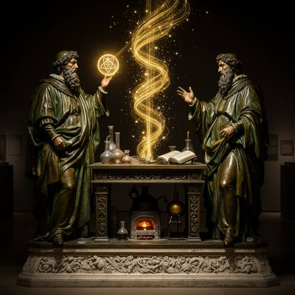
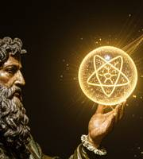
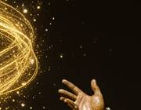

Action — Please generate a picture: a Renaissance bronze sculpture depicting tw
Please generate a picture: a Renaissance bronze sculpture depicting two alchemists performing spells across a laboratory bench, with light gathering between them.


Judge — Direct
- PASSAction - Non-contact Interaction — The image shows two figures on opposite sides of a laboratory bench. They are gesturing with their hands toward a central area above the bench where bright, swirling light and sparkles are gathered, visually representing the act of performing spells in a non-contact manner.
- FAILStyle — The image depicts two figures with a metallic, bronze-like texture, consistent with a bronze sculpture. However, the image also includes elements that are not part of a sculpture, such as glowing light effects, sparkles, and transparent glassware containing colored liquids. These elements are rendered photorealistically, making the overall style a composite rather than a pure depiction of a Renaissance bronze sculpture.
- PASSWorld Knowledge — The figures are depicted as alchemists. They are shown in a laboratory setting, surrounded by various glassware like flasks and beakers on a bench and on shelves in the background. They are dressed in robes, which is a common visual trope for alchemists.
- PASSAttribute - Quantity — The image accurately depicts exactly two figures, who are identifiable as the alchemists mentioned in the prompt.
Judge — Continuum
- PASSAction - Non-contact Interaction — The image shows two figures on opposite sides of a laboratory bench. The figure on the left holds a glowing orb with a symbol, while the figure on the right gestures towards the center. A large, swirling column of golden light rises from the bench between them, visually representing them performing spells and interacting without physical contact.
- PASSStyle — The image depicts a sculpture rendered in a style consistent with Renaissance art, particularly in the realistic depiction of the figures, their bearded faces, and the detailed, heavy drapery of their robes. The material of the sculpture has the dark, patinated appearance of bronze.
- PASSWorld Knowledge — The two figures are depicted as elderly, bearded men in scholarly robes, which aligns with the historical and popular conception of alchemists. The scene includes a laboratory bench with various glass flasks and beakers, an open book, and a small furnace underneath, all of which are elements commonly associated with an alchemist's laboratory.
- PASSAttribute - Quantity — The image clearly shows two distinct figures of alchemists. One figure stands on the left side of the laboratory bench, and the other stands on the right side.
What the agent did
Thinking
I need to investigate this further. Let me confirm the details. The user is asking for an image: a Renaissance-style bronze sculpture depicting two alchemists performing spells (spells) across a laboratory bench, with light gathering between the two. Let me generate this with flux2-dev. The scene is: a Renaissance bronze sculpture (bronze material, patina, sculptural style), two alchemists standing on either side of a laboratory bench, performing spells/gestures toward each other, and between the two — above/across the bench — light is gathering (glowing beams, light particles). I'll write a detailed visual prompt. Since it's a sculpture, the figures should look sculpted — bronze, with a greenish patina, in a Renaissance style (draped robes, long beards, like a Verrocchio/Donatello-type style). The "spell" aspect is interesting for a sculpture — maybe one holds a glowing orb/flask, and the other raises a hand in a gesture, and between them a column of ethereal light gathers. I'll generate at the default 1024x1024, or maybe a wider frame would be good to fit both figures and the bench. The default is 1024x1024. A horizontal composition might be better — two figures across a bench suggests a wide composition. Should I go with 1344x768? The policy says image size is fixed for comparison, controlled by the harness... actually the note says "do not set the seed. Size and seed are controlled by the harness." Hmm, but I can set width and height in the generate_image call. The policy says size is controlled by the harness — so maybe I shouldn't override the size? It says "do not try to expand the frame. Image size is fixed for comparison." That suggests the harness picks the size and my output is compared at that size. Let's play it safe: use the default 1024x1024. Actually, the instruction is "size and seed are controlled by the harness," which I interpret as: don't set the seed, and leave the size at default. I'll go with the default. Prompt: "Renaissance bronze sculpture, cast bronze with a deep green patina, two alchemist figures standing on either side of a laboratory bench, one holds a glowing alchemical orb, the other raises a hand in a spell gesture, between them a swirling column of luminous light gathers above the bench, engraved drapery folds, bearded figures in Renaissance robes, ornate pedestal base, dramatic chiaroscuro lighting, dark museum background, photorealistic studio photograph of the sculpture" Alright, let me generate it.
Step 1 — `generate_image`
{
"model": "flux2-dev",
"prompt": "Renaissance bronze sculpture photographed in a dark museum setting: two bearded alchemist figures in heavy draped Renaissance robes, cast in bronze with a rich green-brown patina, standing on opposite sides of an ornate laboratory bench. One alchemist holds up a glowing alchemical orb; the other extends a hand in a spell-casting gesture. Between them, over the bench, a swirling column of golden light gathers, with small glowing particles and incandescent rays connecting the two figures. The bench is sculpted with flasks, alembics, a furnace and a book. Intricate carved drapery folds, a carved stone pedestal base, dramatic chiaroscuro lighting, museum spotlight, photorealistic photograph of a sculpture."
}Result img_0
Thinking
The result is really good. Let me check against the prompt: - Renaissance bronze sculpture: ✓ — the figures are clearly sculpted, with bronze/green patina, carved folds, a Renaissance-style drapery feel. - Two alchemists: ✓ — two bearded figures in robes. - Casting a spell across the workbench: ✓ — one holds a glowing orb, the other extends his hand in a gesture of casting. - Light gathering between the two: ✓ — a golden swirl of light between them. - Workbench with lab equipment: ✓ — flask, alembic, open book, furnace. A few minor points to verify: is the whole thing "a sculpture"? The glowing orb and light are depicted as actual light rather than sculpted light — but the prompt says "casting a spell… light gathering between the two," so having literal light effects is as intended and not a flaw. The bench and pedestal look like stone/bronze — good. The left figure's robe has a bit of a greenish tint (patina), no problem. Let me zoom in on a few areas to check details — the hands, the orb, the pedestal. I might inspect the hands and the orb area. Actually, the image looks pretty clean. I could quickly check the hands with inspect_region to make sure there aren't any extra-finger artifacts, and I might also look at the face. Let me inspect the left figure's hand holding the orb and the right figure's open hand. Do two inspection crops: the region of the left hand with the orb, and the right hand. Or should I do the whole central light area? The light looks good. Let me check the hands.
Model
This is a very strong first result. Before making the call, let me zoom in and check the tricky parts—the hand holding the orb, and the hand that's open.
Step 2 — `inspect_region`
{
"image": "img_0",
"roi": [
240,
130,
420,
330
]
}Result img_1

Step 3 — `inspect_region`
{
"image": "img_0",
"roi": [
540,
200,
720,
340
]
}Result img_2

Thinking
The hand holding the orb looks fine — the fingers supporting the orb are reasonable. The open hand on the right has five fingers and looks natural (the thumb might be a bit stubby, but within acceptable range). The orb has a good sigil on it. Everything in the prompt is satisfied: - Renaissance bronze sculpture ✓ (bronze material, patina, carved drapery, Renaissance style) - Two alchemists ✓ - Casting a spell across the laboratory bench ✓ - Light gathering between the two ✓ - Laboratory bench with flask, alembic, book, furnace ✓ The image is good. Mark it as the best and stop — it's good enough. Following the stopping rule: don't over-edit. Mark img_0 as the best and finish.
Model
The details hold up — the orb-bearing hand reads naturally with the sigil glowing on the glass sphere, and the outstretched casting hand is clean. Everything the prompt asked for is present: the Renaissance bronze style with patina and carved drapery, two alchemists opposite each other across the bench, the spell gestures, and the golden light coiling between them over the bench of flasks, alembics, and a glowing furnace. This is a result I'd submit.
Step 4 — `mark_best`
{
"image": "img_0",
"reason": "All requested elements present and verified: Renaissance bronze sculpture style, two alchemists casting spells across a laboratory bench, golden light gathering between them; close-up inspection confirms hands and orb are clean."
}Thinking
Complete. I'll summarize concisely.
Model
Done. The final image (marked as best) shows a Renaissance bronze sculpture of two bearded alchemists in draped robes standing on either side of an ornate laboratory bench. One lifts a glowing sigil-marked orb while the other extends a spell-casting hand, with a swirling column of golden light and sparkles gathering between them over the bench of flasks, alembics, an open book, and a glowing furnace — all atop a carved pedestal in a dark museum spotlight. Close-up checks confirmed the hands and orb rendered cleanly, so no further edits were needed.